← 返回阅读库 · 原论文目录
论文讲解阅读文档 · 表征学习 · v208
iBOT Image BERT Pre-Training with Online Tokenizer[2111.07832]
视频时长 00:07:14；讲解文字 3,745 字符；提取讲解画面 24 张。按视频原顺序阅读，每段文字保留时间戳。
文字来自整段视频的自动语音转写，按自然停顿分段，并与 PPT / 论文页面 / 演示画面对齐。未将讲解压缩为摘要；术语、数字和口述公式请结合画面及原论文核对。 阅读稿已校正规范部分明确术语误识别；原始逐字稿和每处修改记录另行保留。
讲解画面为源视频截图（640×360），不是可编辑 PPT 文件。全片按每秒 2 帧扫描内容变化，逐步展开页保留；连续动画保留代表画面。清晰度受源视频限制。
下载完整资料包 · 含离线 HTML、PDF、Word、全部 PPT 画面和字幕。
原论文与材料
iBOT: Image BERT Pre-Training with Online Tokenizer · 下载完整 PDF（29 页）
按时间阅读
00:00:00–00:00:11 · 画面 001
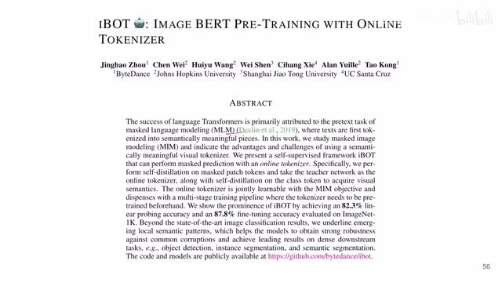
00:00:00–00:00:11 · 画面 001大家好,今天我们来快速出一篇论文 iBOT, Image BERT Pre-training with Online Tokenizer 这一篇也是一个经典 Self-Supervised Learning 的文章了我们在开始这篇之前,首先快速的回顾一下 DINO、DINO 这个东西它就有 Contrastive Learning, Self-Distillation 这些一脉相承的东西发展下来的快速的总结来说,就是你有一张图像 X 你把它加不同的 Data Augmentation
00:00:11–00:01:09 · 画面 002
00:00:11–00:01:09 · 画面 002那同样一张图像加不同的 data augmentation 你就得到这个两个 views 啊叫这个 v 和 u 啊因为这个 v 和 u 他们是从同一张图像里面增强得来的所以呢他们的语义信息就应该是相似的啊那基于这个呢我们就可以构建这个监督信号那这里呢 dino 的设计呢就是我维持一个 teacher network 维持一个 student network 那这两个 network 呢它的这个结构是一样的那这里呢比如说我把这个 v 送到 teacher networku 送到 student network 那么这两个这个 representation 出来它们应该是相似的那具体来说呢它出来的 representation 我们把它视作成一个 data distribution 那它用一个 cross entropy 来衡量这两个 data distribution 它们的相似程度这个呢就是这个 dino 它的一个 loss
00:01:09–00:01:10 · 画面 003
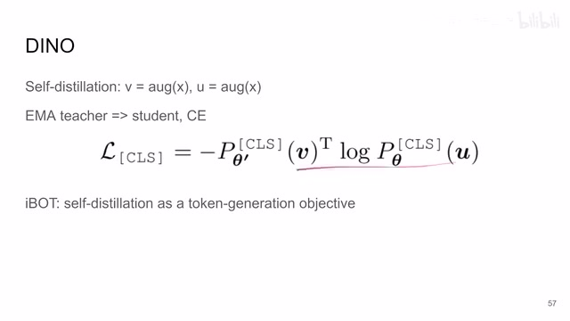
00:01:09–00:01:10 · 画面 00300:01:10–00:01:22 · 画面 004
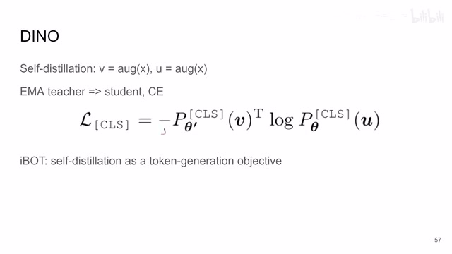
00:01:10–00:01:22 · 画面 004那当然你看这个 cross entropy 还是一个不对称的 loss 所以呢你还需要交换这个 uv 的位置你把 u 送到 teacher v 送到 student 里面也有一个相似的这样一个 loss 然后呢这样两个 cross entropy 去平均就是最终的这个 loss 那当然你更新完这个 student network 之后对吧是通过这个 exponential moving average ema 这个方法把这个 teacher 的权重也随着更新啊这个就是一个 dino 的一个基本逻辑啊
00:01:22–00:01:23 · 画面 005
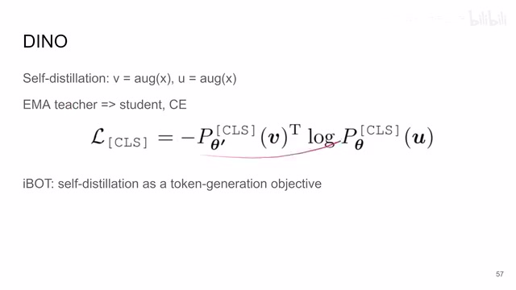
00:01:22–00:01:23 · 画面 00500:01:23–00:01:36 · 画面 006
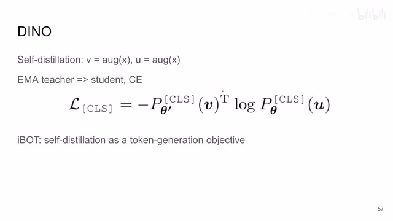
00:01:23–00:01:36 · 画面 00600:01:36–00:01:37 · 画面 007
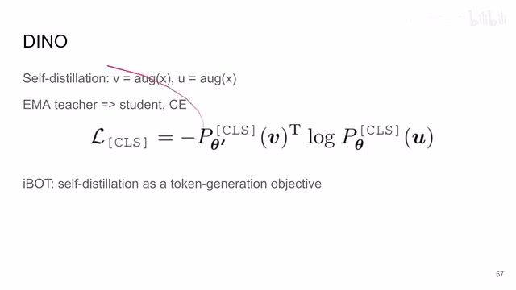
00:01:36–00:01:37 · 画面 00700:01:37–00:02:03 · 画面 008
00:01:37–00:02:03 · 画面 008那么在这里呢本文这个 ibot 它呢不仅有这个 self-distillation 这些东西同时呢它把这个 bert 这个东西引入进来了那本质上呢就是说我的这个图像进来对吧我拿掉一部分的 token 拿掉一部分的 patch 那它呢还是应该跟原始的图像相似的那么你这个相似的元素呢你同样拿 cross entropy 来做就是本文的这个 ibot 那么下面我们具体来看啊那首先啊这个结构图我们还是跟那个 dino 一样对吧有一个 student network
00:02:03–00:03:24 · 画面 009
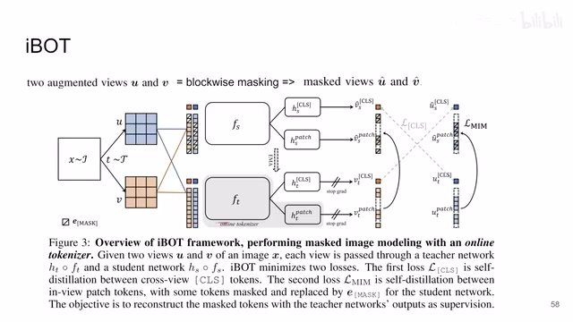
00:02:03–00:03:24 · 画面 009有一个 teacher network 那同时呢后面有这个 projection head 就是把我们的 representation 我从 transformer 里面出来的 representation 给他投到一个 latent space 里面那这里呢你可以看到他分了两只啊一个是投这个 classification token 另一只呢就是投这个 patch 的这个 token 那本质上都是 mlp 那其实我们重点要关注的是他们怎么操作的我们来看啊一张图 x 从这个 dataset 里面取出来
还是做两个不同的 augmentation 得到 u 和 v 两个 view 那这个 u 和 v 得到之后呢我们送到 transformer 里面对吧肯定是把它化成一个 patch 对吧然后每个 patch 都变成一个 augmentation 然后再送进去嘛但是这里呢作者引入了这个 BERT 里面这个 masking 这个概念这是一串 token 嘛比如说这里是九个 token 我随机的 mask 掉了其中一些就相当于我随机取一些 token 把它替换成这个 mask token 一样这样子呢这个 u 和 v 具有了相应的他们的 mask view 这个 u head 和这个 v head
然后呢作者把这个 u head 和 v head 送到这个 online 这个 student network 里面啊他就那种强硬的这个 representation 对吧你看到这边是 vs head 啊这边是 us head 对吧然后呢把这个没有 mask 的这个东西啊这个 u 和 v 送到我们的 teacher network 里面啊就得到这个 vt 和 ut那么当然因为这些 UV 啊 Uhead Vhead 它们都是来自于这一个同样的图像对吧所以呢它们表达语意信息就应该相同的我们就开始加这个 similarity 了那具体来看呢因为我们用了 transformer 嘛所以最后它每一个 patch 出来呢都会有这么一个 representation 那这里呢作者关注的是我这个 student network 出来预测出来的这个 patch 它
00:03:24–00:03:26 · 画面 010
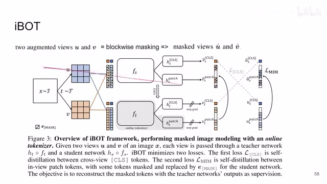
00:03:24–00:03:26 · 画面 01000:03:26–00:03:35 · 画面 011
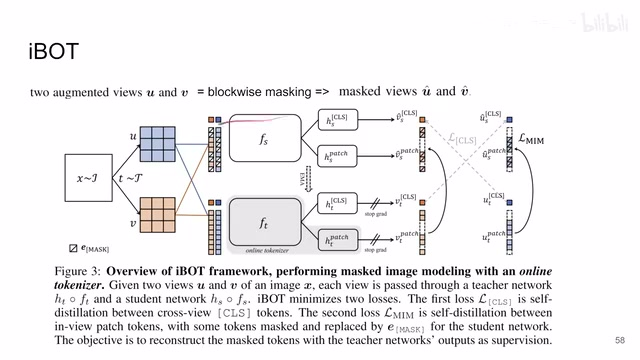
00:03:26–00:03:35 · 画面 01100:03:35–00:04:44 · 画面 012
00:03:35–00:04:44 · 画面 012虽然输入的是这个 mask 的这个 patch 就是我不知道原图里面是什么但是我希望经过这个 transformer 根据其他的这些已知的这些 token 这些有颜色的这些 token 我能够预测出来这些被 mask 掉的这个 token 里面的内容是什么最终反映到这些 token 的位置上这个 representation 上那么我怎么样去监督这样一个预测的过程呢就是根据已经有了这些 token 去预测这个 mask 的 token 呢我们找到这个 teacher network 因为这个 teacher network 它是能看到所有整个没有 mask 的整个这张图像的那我们继续查这个被 mask 掉这个 token 对吧它我们预测出来的这个 representation 跟我们实际这个 teacher network 它看到这个整个图像之后得到这个被 mask 掉的位置的这个 representation
他们两个的相似程度是怎么样的呢对吧那么为了描述这样的一个相似程度还是跟 Dino 一样对吧我们用一个 cross entropy loss 这边你可以看到这是 mask 的图像送到我们的
00:04:44–00:04:45 · 画面 013
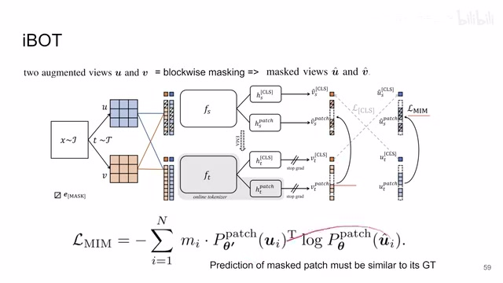
00:04:44–00:04:45 · 画面 01300:04:45–00:05:05 · 画面 014
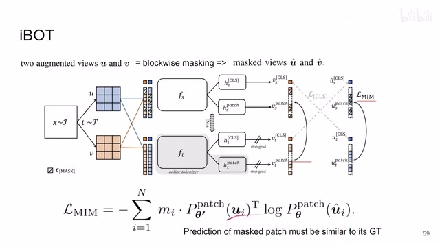
00:04:45–00:05:05 · 画面 014这个 student network 里面然后呢取到一个被 mask 的这个 patch 然后呢它的这个相似程度跟我们的这个整张图像送到 teacher network 里面取到这个 mask 的位置的 representation 那这两个 representation 应该相似嘛对吧这个 m 呢就是一个 mask 就是我们在算这个 loss 的时候我们只选择这个被 mask 的区域的这些 loss 像这个有颜色的没有被 mask 的区域呢我们就不计算它的这个 loss
00:05:05–00:05:21 · 画面 015
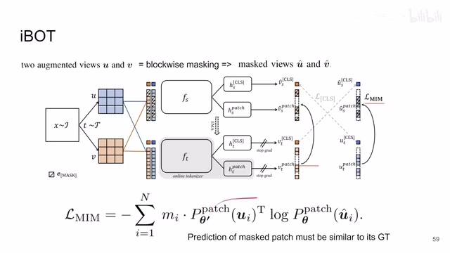
00:05:05–00:05:21 · 画面 015这里呢作者叫它这个 MaskImageModelingMIM 这样一个 loss 那你对这个 U 可以做这样一个 loss 同样的对应的对吧你可以对这个 V 也做一样的这个 loss 那本质上呢它就是跟 BERT、Masked Autoencoder 这些东西一样就是通过已知的这些 token 来预测未知的这些 token 只不过这个预测的这个结果呢你是从这个 TeacherNetwork 里面来的那当然这个 TeacherNetwork 你就不能用这个梯度来更新了
00:05:21–00:05:23 · 画面 016
00:05:21–00:05:23 · 画面 01600:05:23–00:05:24 · 画面 017
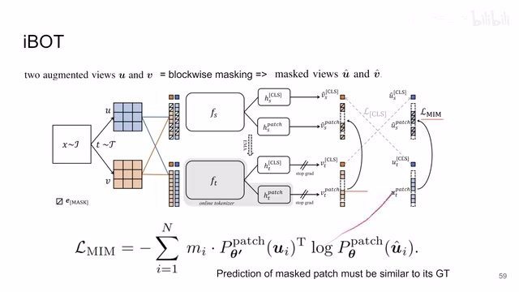
00:05:23–00:05:24 · 画面 01700:05:24–00:05:40 · 画面 018
00:05:24–00:05:40 · 画面 01800:05:40–00:05:57 · 画面 019
00:05:40–00:05:57 · 画面 019你要用这个 EMA 从 student network 里面逐渐的更新过来那么这个呢就 iBOT 相当于 DINO 这个东西它新加的这么一个玩意儿就是本文的核心的技术共享同样的呢我们已经有了这个 DINO 这个东西我们为什么要删去它的呢对吧一样留着那这里呢被 masked 的这个 classification token 这个是 VSHat 应该跟另一个 Vue 的没被 masked 的这个 classification token 这个 UT 它们两个是相似的
00:05:57–00:06:27 · 画面 020
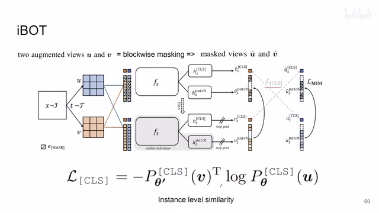
00:05:57–00:06:27 · 画面 020这个就是跟 dino 一样的设计了对吧两个不同的 view 它的 representation 应该是相似的那同样的呢对吧这边 vt 和这个 us head 啊他们两个也是相似的那同样的用什么来衡量这个相似度呢这个 cross entropy loss 那么最后呢作者还发现啊我这里不是有两个 mlp 分别把这个 classification token 还有这个 image 这些 token 投到他这个 latent space 里面呢那实际上作者发现呢如果让这两个 network
00:06:27–00:06:29 · 画面 021
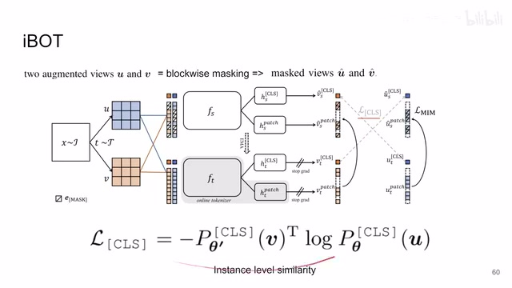
00:06:27–00:06:29 · 画面 02100:06:29–00:06:48 · 画面 022
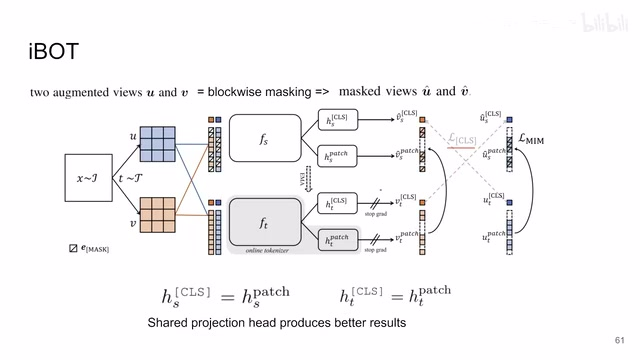
00:06:29–00:06:48 · 画面 022他们的参数一样才能够取得更好的效果这个是一点观察那么快速的到一个结果的部分对吧？相对于之前的当时的这些方法啊，还是很有竞争力的。那本文的重点呢，就在于他结合了这个 mask 还有呢，这 contrastive learning，相对把两个世界给他都结合起来了啊，取得了一个相对满意的结果。那还是如果你对这个方面感兴趣呢，非常推荐你到原文查看。好的，那么以上就是我对这个论文的一个快速的整理啊，非常快速的一个整理。那么感谢您的收看，再见。
00:06:48–00:07:13 · 画面 023
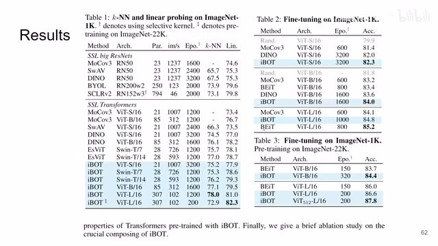
00:06:48–00:07:13 · 画面 02300:07:13–00:07:14 · 画面 024
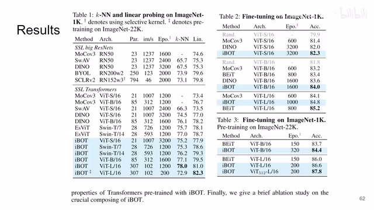
00:07:13–00:07:14 · 画面 024转写与来源说明 · 0 个自动复核提示
保留 18 个原始语音片段，0 个片段触发自动复核提示。提示仅用于定位可能的术语、重复或识别问题，不等于已确认错误。
讲解画面为源视频截图（640×360），不是可编辑 PPT 文件。全片按每秒 2 帧扫描内容变化，逐步展开页保留；连续动画保留代表画面。清晰度受源视频限制。
原视频：paper/合集_2026-10-16_表征学习/[论文速览]iBOT Image BERT Pre-Training with Online Tokenizer[2111.07832].mp4
SHA-256：e4033f17f8f3bd150a901707778605dddca9e9134670afc6f022447b764a2f81
全文按视频语音与画面制作。原论文可从上方链接下载；完整资料包保留全文、原始逐字稿、字幕和校对记录。